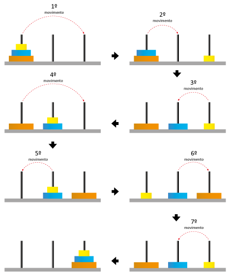

Introdução
A Torre de Hanói é considerada um “quebra-cabeça” onde testa
principalmente os conhecimentos e sentidos “lógicos e ágeis” de cada
jogador para que seja solucionado na menor quantidade de movimentos
possíveis.
Regras
O jogo, consiste em três sequencias de colunas, sendo que a primeira, está
preenchida com todos os discos em ordem crescente, ou seja,"Do maior para
o menor" e o seu principal desafio, é transferir todos os discos da
primeira coluna para a última, sendo que no processo o jogador poderá
somente selecionar um disco por vez, e respeitando a utilização da ordem
Crescente. Na imagem abaixo podemos ver com mais detalhes.
